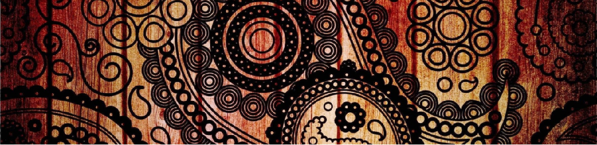

Leagacy of Indian artform
Artwork brings harmony and connects us to the soul of society. Artworks play a critical role in building a peaceful, creative and harmonious society. Indian states are blessed with a rich legacy of artforms. Several artists have played pivotal roles in promoting these artforms. India has a rich heritage of artforms. Every artwork has its own beautiful story. These stories date back to 1000-2000 years old. We can pass this story to our next generation by observing the work of artisans. There is a belief that Madhubani paintings originated from Sita's wedding. The painting uses handmade products: turmeric, banyan leaf milk, indigo, kusum flower, green leaf of the applewood tree etc. India has a rich diversity of artforms or artworks. Each art form reflects the ethos and thought process of society of that time. When we bring art product of handmade artforms, we bring great heritage and story to our house. These stories can pass on to our generations.

WHO ARE WE
KalaaVistaar is building online and offline platforms to sell and promote art products. KalaaVistaar aspires to promote the rich Legacy of Indian Artforms. We aspire to touch the heart of art lovers by easily providing them home décor and handmade utility products. We are constantly looking for artists and art lovers.
To be the world's best and most sustainable platform for promoting the legacy of Indian artforms globally
